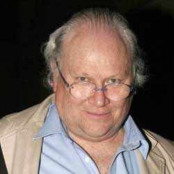

|
| Home The Doctors The Companions The Villians Show History |
Colin BakerColin Baker (born 8 June 1943) is an English actor, who is known as Paul Merroney in The Brothers from 1974 to 1976 and as the sixth incarnation of The Doctorin the long-running science fiction television series Doctor Who from 1984 to 1986. |
|
Madeleine Schwartz Ann Marie Skjold |
Content derived from Dr. Who Wikipedia.
|